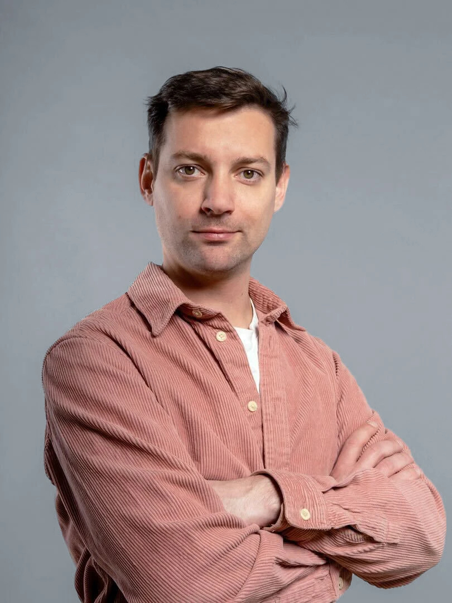
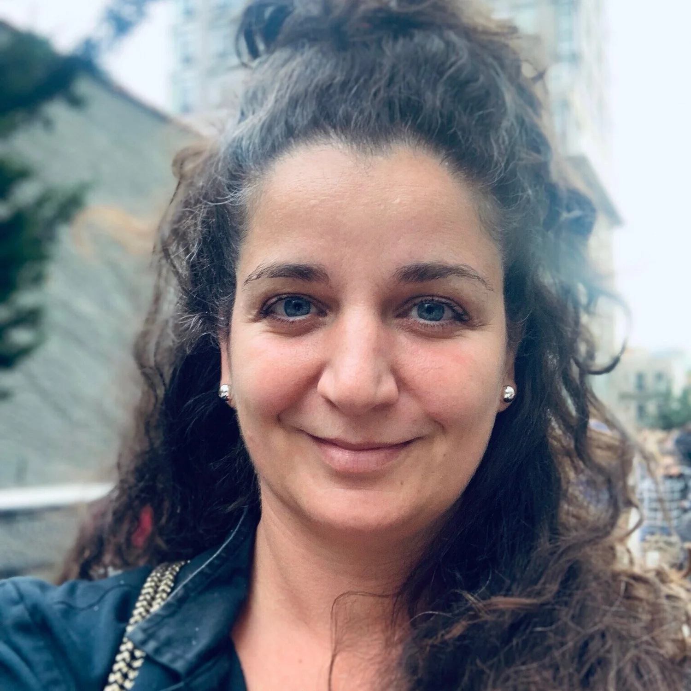
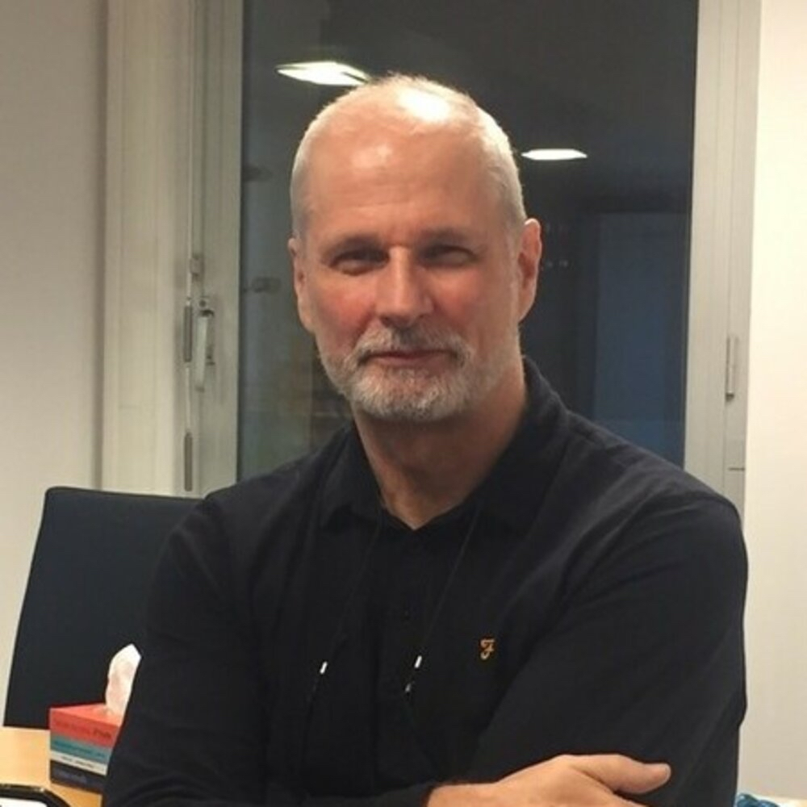
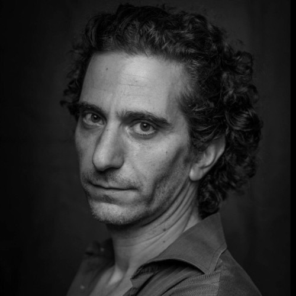
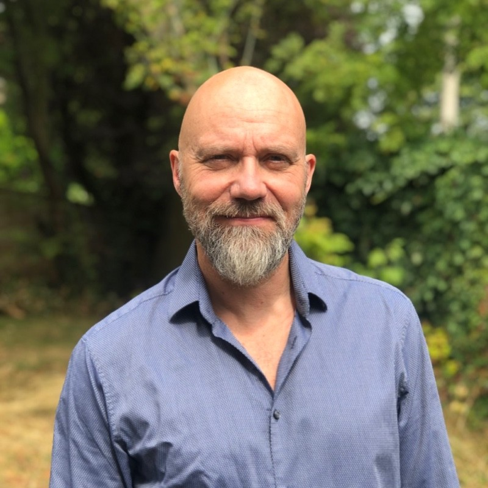

APuskás Bence
D-BUG Studios · VFX producer
Erős konkrét lead animációs/VFX beszállítói irányban.
Cél: call + showreel.
Részletek
- D-BUG: VFX / animation / commercial profil.
- Jó belépés: konkrét kapacitás, gyors pilot, showreel.
- Személyes megjegyzés: VFX producerként releváns, mert animációs kapacitás oldalról lehet kapcsolódni.
Lehetséges nyitás / pitch irány: Animációs / CG / motion kapacitással tudnánk beszállni D-BUG projektekbe.
VFXanimationgyors lead
AAdrian Sabau
Family Film · Producer, Head of Film & Television
Erős produceri / film & television service-production lead Romániából.
Cél: aktuális film/TV és reklámfilmes igények feltérképezése + showreel.
Részletek
- 2016 óta 25+ nemzetközi feature film és TV-sorozat Romániában és külföldön.
- Referenciák: Warner Brothers – The Nun; MGM – Wednesday S1; Netflix – Christmas Prince trilógia; 20th Century & Disney – We Were The Lucky Ones; Hallmark; MPCA; Borat 2; Around The World in 80 Days; Tin Soldier; upcoming Bedlam / Black Victoriana 2026.
- Korábbi A- FamilyFilm leadet A-ra érdemes emelni: nemcsak reklámfilmes, hanem nemzetközi film/TV service-production kapcsolat.
- Jó irány: VFX, 3D, cleanup, previs, animáció, motion, post pipeline, reklámfilmes kiegészítő munka.
- Megjegyzés: korábban Adrian családneve bizonytalan volt; pontosítás alapján Adrian Sabau, Romania, Producer, Head of Film & Television, Family Film.
Lehetséges nyitás / pitch irány: Nemzetközi film/TV produkciók mellé tudunk animációs, VFX, 3D, previs vagy motion design kapacitást biztosítani.
feature/TVservice productionRomaniaA-prioritás
APetra Iványi
Lions Production · Founder / Producer
Funding, koprodukció, feature/TV, nemzetközi service production.
Cél: stratégiai produceri kapcsolat.
Részletek
- Lions: Budapest–Sofia production service.
- Petra: filmfinanszírozás, regulatory, nemzetközi koprodukció, creative development.
- Profi, rövid, produceri nyelvű megkeresés kell.
Lehetséges nyitás / pitch irány: Nemzetközi production pipeline-ba illeszthető animációs/VFX kapacitást tudunk adni.
producerfundingco-production
A
Vladimir Gerasimov
Lions Production · Partner / Producer
Reklámfilmes háttér, CEE és bolgár production network.
Cél: reklám / service partner.
Részletek
- Noble Graphics/TBWA háttér; Cannes Young Lions Gold.
- Jó irány: reklám, branded content, 3D, VFX, motion.
Lehetséges nyitás / pitch irány: Reklámfilmes / branded content projektekhez tudunk animációs, VFX vagy motion támogatást adni.
reklámCEEproducer
A
Judit Stalter
Laokoon Filmgroup · CEO / Producer
High-end producer, nemzetközi service / koprodukciós kapu.
Cél: stratégiai kapcsolat.
Részletek
- Laokoon: Budapest + New York, nemzetközi produkciós háttér.
- Inkább hosszabb távú gatekeeper, nem gyors sales lead.
- Hangnem: rövid, konkrét, nagyon professzionális.
Lehetséges nyitás / pitch irány: Live-action produkciók mellé animációs/VFX/post kapacitást tudunk biztosítani.
high-endinternationalproducer
B+Ferich László
DIVISION.FILM · reklámproducer / EP
Élőszereplős reklámprodukciók, jó live-action + VFX/motion irány.
Cél: reklámfilmes beszállítói kapcsolat.
Részletek
- Commercial / service production profil.
- Erős, ha gyors turnaround és reklámreferenciák vannak.
- Megjegyzés: reklámproducer, élő szereplős dolgokat készít.
Lehetséges nyitás / pitch irány: Live-action reklámok mellé tudunk animációs, VFX, motion design vagy CGI kiegészítést adni.
reklámlive-action+VFX
B+PropCheck Team
Frank / Angela / Victoria · 3D / promó
Konkrétan ajánlottak 3D-s és promóvideós együttműködést.
Cél: pilot / első projekt.
Részletek
- Inkább tech / vizualizációs ügyfél, nem klasszikus filmes buyer.
- Jó irány: 3D demo, platformbemutató, promóvideó, explainer.
- Megjegyzés: Frankkel, Angelával és Victoriával volt találkozó; együttműködést ajánlottak 3D-s témában és promóvideók készítésében.
Lehetséges nyitás / pitch irány: A 3D és promóvideós együttműködésről beszéltünk, ezt szívesen folytatnánk.
3Dpromópilot
B+Bársony Dávid
NFI Filmlabor · compositing / VFX
Utómunka, kompozitálás, nyitott együttműködésre.
Cél: szakmai post-production kapcsolat.
Részletek
- Compositing / VFX / NFI Filmlabor háttér.
- Hasznos pipeline, delivery és live-action+animation integrációhoz.
- Megjegyzés: NFI Filmlaborban dolgozik, utómunkával foglalkozik, kompozitálás területen; nyitott együttműködésre.
Lehetséges nyitás / pitch irány: Animáció + compositing + live-action integráció témában lenne jó beszélni.
compositingpostVFX
B+Markos Levente
hangutómunka / sound post
Hangutómunka; szívesen segít.
Cél: audio-post partner.
Részletek
- Animációhoz: sound design, foley, voice cleanup, mix, delivery.
- Megjegyzés: hang utómunkával foglalkozik, ilyen témában kereshető, szívesen segít.
Lehetséges nyitás / pitch irány: Animációs projektek hangutómunkája / sound design kapcsán keresnénk.
soundaudio-post
B+Rob Saunders
SCS Exhibitions · Euro Cine / BSC Expo
Erős rendezvényszervezői / UK film-TV networking kapu.
Cél: bevezetők, ajánlások.
Részletek
- BSC Expo / British Society of Cinematographers kapcsolódás.
- Nem buyer, de erős network- és event-kapu.
- Megjegyzés: szervezői csapatból, ezért referral és további kontaktok szempontjából fontos.
Lehetséges nyitás / pitch irány: Kik azok a producerek vagy production cégek, akikkel animáció/VFX stúdióként érdemes beszélnünk?
eventnetworkUK
B
Brian Donovan
PGGB · line producer / production network
UK production / line producer / Production Guild network.
Cél: UK produceri / production network.
Részletek
- High End TV és major feature production management tapasztalat.
- Inkább network, nem direkt animációs buyer.
Lehetséges nyitás / pitch irány: CEE animation/VFX/post kapacitással tudnánk UK vagy nemzetközi produkciókat támogatni.
UKline producernetwork
B-Ifj. Juhász László
Juhász Team · lovas produkció
Nagy produkciókban dolgoznak, produceri kapcsolatokkal.
Cél: produceri bevezetők.
Részletek
- Lovas, történelmi, fantasy vagy tömegjelenetes produkcióknál lehet jó kapcsolódás.
- Megjegyzés: lovas produkció, nagy produkciókban vesznek részt, producerekkel is van kapcsolata.
Lehetséges nyitás / pitch irány: Történelmi / lovas / nagy produkciók VFX vagy animációs kiegészítése kapcsán tudnánk kapcsolódni.
lovasproduction
C+Can Togay
filmrendező / forgatókönyvíró
Kreatív fejlesztési kapcsolat, nem direkt buyer.
Cél: alkotói kapcsolat.
Részletek
- Rendező, író, kulturális és media art háttér.
- Megjegyzés: filmrendező, forgatókönyvíró.
Lehetséges nyitás / pitch irány: Animációs történetfejlesztés vagy vizuális világépítés kapcsán szívesen beszélnénk.
creativewriter
C+Jonathan Harvey
Cinematographer · Aalto University
DoP + oktatói kapcsolat, jó puha személyes follow-up.
Cél: puha kapcsolatépítés.
Részletek
- 26 év cinematographer tapasztalat, NFTS UK.
- Későbbi téma: live-action + VFX/animation integráció.
- Megjegyzés: kedves idősebb ember, megnézte a fotókiállítást; erről érdemes kérdezni, hogy tetszett-e neki.
Lehetséges nyitás / pitch irány: Örültem, hogy megnézted a fotókiállítást, kíváncsi lennék, milyen benyomásod volt róla.
DoPsoft follow-up
C+
Miklos Buk HCA
Freelance Cinematographer
Cinematography / HCA / nemzetközi operatőri network.
Cél: szakmai network.
Részletek
- AFI MFA + SZFE operatőri háttér.
- Virtual production, VFX-supervised shooting, CG integration irány lehet érdekes.
- Megjegyzés: HCA / operatőri kapcsolati kör miatt szakmai networkként hasznos.
Lehetséges nyitás / pitch irány: Animáció/VFX és operatőri előkészítés kapcsolódásáról szívesen beszélnénk.
cinematographyHCA
C+Henrik Moseid
Softlights · Owner
Lighting / cinematography technikai kapcsolat.
Cél: technikai kapcsolat.
Részletek
- Cinema/TV lighting, custom lighting solutions.
- Nem buyer, de technikai/cinematography network.
- Megjegyzés: előadó volt a 2F-ben, a Becoming a Movie Maker előadás környékén.
Lehetséges nyitás / pitch irány: A practical lighting és VFX/CG integráció kapcsán érdekes lenne beszélni.
lightingtechnical
C
Iain Hazlewood
Cinematography World · editor / digital manager
Szakmai média / PR / interjú lehetőség, nem buyer.
Cél: cikk / interjú / láthatóság.
Részletek
- Editor, writer, content editing háttér.
- Jó lehet Euro Cine utókommunikációhoz.
- Megjegyzés: inkább szakmai média és PR-kapcsolat, nem producer/buyer.
Lehetséges nyitás / pitch irány: Animáció/VFX és cinematography metszetében tudnánk érdekes szakmai témát adni.
PRmedia